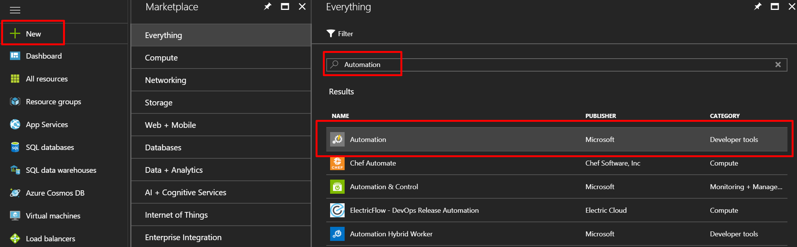
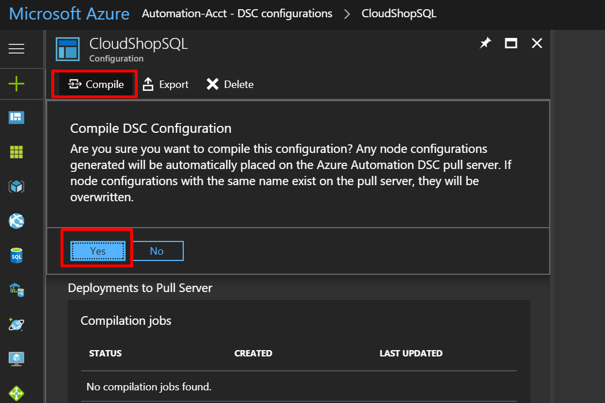
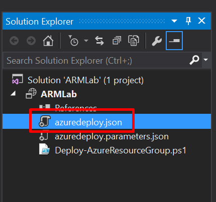

Overview
In this workshop session we are going to construct an ARM template using Visual Studio, this ARM template will build out a simple network topology consisting of a single VNET with two subnets “FrontEndNet” and “DataBaseNet”, we will add two Virtual Machines to this configuration to represent the front end Web Server and the backend Database VM. Building on from that we will make use of PowerShell Desired State Configuration (DSC) to set the Windows Guest OS and Application components up to handle the application which we want to run. This will be a simple web store applicaton for demonstraton purposes
Our Goal with this lab exercise is to show you how you can make use of ARM templates to automate the provisioning of your infrastructure and applications. With this knowledge you should feel more empowered to start using tools such as ARM Templates and DSC to enable Infrastructure as Code (IaC) in your projects. Lets get started.
Pre-Requirements
We are going to need a few things up and running on our workstation in order to complete this lab
- An Azure Subscription
- A laptop or development workstation with the following software installed
- Visual Studio 2017 Community or Enterprise Edition Visual Studio Downloads
- The latest Azure PowerShell cmdlets Instructions regarding installing Azure PowerShell cmdlets
Please Ensure that you reboot your qorkstation after installing the SDK and the PowerShell cmdlets
Exercise 1
Configure the Automation Account
In order to allow Azure to apply our DSC settings to our Virtual Machines we are going to need to use an Automation Account, the Automation account acts as a repository for our Automation needs in Azure
Create the Automation Account
- Browse to the Azure Portal and authenticate at https://portal.azure.com/
-
Click New and type Automation in the search box. Choose Automation from the results

-
Click Create on the Automation blade so that the Add Automation Account blade is displayed. Specify the following information and click Create.

Exercise 2
Upload DSC Configurations into Automation account
-
Firstly we will need to download the DSC Configuration files which we will use for the guest customisation, these can be found at the below link, extract these files to a location on your computer NOTE THIS NEEDS FIXING
-
Click Resource groups > Automation_RG > Automation-Acct In the Configuration Management section click DSC Configurations

- Click Add a configuration to upload the .PS1 DSC files which we downloaded earlier, we will need to add the CloudShopSQL.ps1 and the CloudShopWeb.ps1 files individually
-
Once these have been added we will need click on each configuration and compile them

NOTE: The compile process may take 20-30 seconds to complete.
Summary
In this exercise, you configured an Automation account, and configured DSC configuration scripts that will be leveraged by the virtual machine resources. We ran the configuration scripts through the DSC compiler to ensure that they are good to run against our VMs which we will now start building
Exercise 3
Define the vNet configuration which will host our Virtual Machines
Your first ARM template task is going to be creating a virtual network template using Visual Studio, we will then deploy the defined network configuration to Azure.
- Open Visual Studio
-
Choose File, New Project, and then choose Cloud, and then Azure Resource Group, name the solution ArmLab and click OK

- On the select Azure Template dialog box we will choose Blank Template and then click OK
-
In Solution Explorer, on the right hand side of the Visual Studio Screen click azuredeploy.json this will open the azuredeploy.json file in the center of the screen.

You should see the below code in the center of the Visual Studio workspace
{
"$schema": "https://schema.management.azure.com/schemas/2015-01-01/deploymentTemplate.json#",
"contentVersion": "1.0.0.0",
"parameters": {},
"variables": {},
"resources": [],
"outputs": {}
}
- On the left hand side of the screen you should see the JSON Outline view, if you do not see this then you will need to click View > Other Windows > JSON Outline.
-
On the JSON Outline window, click Add Resource in the upper-left corner or right-click the resources and choose Add New Resource.

-
On the Add Resource dialog box, choose Virtual Network, enter ArmLabVnet in the Name field, and click Add.

- Go to the azuredeploy.json file and inspect its contents. Review the variables section in the JSON. It should look like the following file
"variables": {
"ArmLabVnetPrefix": "10.0.0.0/16",
"ArmLabVnetSubnet1Name": "Subnet-1",
"ArmLabVnetSubnet1Prefix": "10.0.0.0/24",
"ArmLabVnetSubnet2Name": "Subnet-2",
"ArmLabVnetSubnet2Prefix": "10.0.1.0/24"},
},
- Change the name of Subnet-1 to FrontEndNet, and the name of Subnet-2 to DatabaseNet.
"variables": {
"ArmLabVnetPrefix": "10.0.0.0/16",
"ArmLabVnetSubnet1Name": "FrontEndNet",
"ArmLabVnetSubnet1Prefix": "10.0.0.0/24",
"ArmLabVnetSubnet2Name": "DatabaseNet",
"ArmLabVnetSubnet2Prefix": "10.0.1.0/24"
},
-
Deploy the template by right-clicking the ARMLab project, and choosing Deploy > New.

- If you did not sign in to your Microsoft Azure account already, you will be asked to do so now.
- Fill in the email address associated with the Azure account and click Continue.
- Enter your password and click Sign In.
- If you have several subscriptions, choose the one that you want your VNet to be deployed to, and on the Resource group choose Create New.
- On the Create Resource Group dialog box, accept the default value for the name; and for the location, choose the closest location to you, and click Create.
- When you are back on the Deploy to Resource Group dialog box, click Deploy. After about a minute, your virtual network will be deployed to Azure.
- View the created resource group and virtual network in the Azure Management Portal by clicking Resource Groups and clicking the ARMLab resource group. in here you will see the Vnet and Subnets which we defined in the JSON file in Visual Studio.
Summary
In this exercise, you created a new virtual network with two different subnets. This will form the basis of our environment which we will now build in the following exercises
Exercise 4
Extend with Compute
In this Exercise, you will continue the work you started in the previous exercise by creating a storage account and adding virtual machines for the web application and for the database, and then configuring the machines for the roles.
Add an Azure Storage Account
- On the JSON Outline window, click Add Resource in the upper-left corner, or right-click the resources and choose Add New Resource.
-
Add a new Storage Account resource to the template named armstorage
Note: The template generated in the Azure SDK appends a unique value (13 characters in length) to the storage account name. Ensure the name specified is 11 characters or less in length.
- In the JSON Outline locate the parameter named armlabstorageType
- Update the Storage code to use Premium_LRS as the defaultValue by changing it from Standard_LRS to Premium_LRS
Before:
"armlabstorageType": {
"type": "string",
"defaultValue": "Standard_LRS",
"allowedValues": [
"Standard_LRS",
"Standard_ZRS",
"Standard_GRS",
"Standard_RAGRS",
"Premium_LRS"
]
}
After:
"armlabstorageType": {
"type": "string",
"defaultValue": "Premium_LRS",
"allowedValues": [
"Standard_LRS",
"Standard_ZRS",
"Standard_GRS",
"Standard_RAGRS",
"Premium_LRS"
]
}